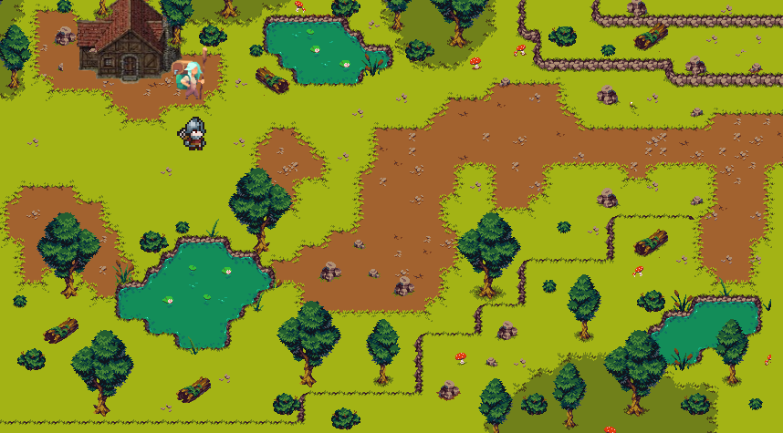

Estágio em IA, dados e software · Curitiba · início imediato · Brasil ou exteriorAI, data and software internships · Curitiba, Brazil · available now · Brazil or abroadAI・データ・ソフトウェアのインターンを探しています
Eu construo e testo projetos de IA, dados e softwareI build and test AI, data and software projects僕は作って、検証する AI・データ・ソフトウェアのプロジェクト
Estudante de Ciência da Computação (PUCPR). Construo projetos de IA, dados e software e testo com método: o que funcionou, o que não funcionou e quanto. Procuro estágio no Brasil ou no exterior, remoto ou presencial.Computer Science student (PUCPR). I build AI, data and software projects and test them with method: what worked, what did not, and by how much. Looking for internships in Brazil or abroad, remote or on-site.PUCPRでコンピュータサイエンスを学ぶ学生です。AI・データ・ソフトウェアのプロジェクトを作り、何がうまくいき、何がうまくいかなかったかを方法的に検証しています。ブラジル国内外、リモートまたは現地でのインターンを探しています。
8,35Média na faculdade (0-10)University GPA (0-10)大学のGPA (0〜10)
1º lugar1st place1位 · Jokenpôturmaclass授業
2º lugar2nd place2位 · Batalha Naval 2turmaclass授業
2 mods de Minecraft no GitHub2 Minecraft mods on GitHubGitHubでMinecraft MODを2つ公開
96h voluntariado · Casa de Maria96h volunteering · Casa de Mariaボランティア96時間 · Casa de Maria
RESULTADOS · NÚMEROS QUE EU CONSIGO DEFENDERRESULTS · NUMBERS I CAN DEFEND成果 · 説明できる数字
71/100
vezes que meu robô de Minecraft conseguiu um diamante, em testes com pontos de partida que ele nunca tinha visto.times my Minecraft bot got a diamond, in tests from starting points it had never seen.テスト用に確保したスポーンで、Minecraftボットがダイヤモンドを確保した回数。
LimiteLimit限界dificuldade fácil e um único mundo-base; a margem de erro vai de 62 a 80 (IC 95%).easy difficulty and a single base world; the margin of error runs from 62 to 80 (95% CI).難易度イージー、シード1つ。95%信頼区間 62〜80。
+1,36%+1.36%+1.36%
de ganho médio por operação, em simulação, em 293 operações de teste. A hipótese foi registrada antes de testar.average gain per trade, in simulation, over 293 test trades. The hypothesis was registered before testing.取り置いたデータでのコスト控除後の1取引あたり(n=293)。検証前に仮説を登録。
LimiteLimit限界só simulação, sem dinheiro real. Depende de poucos dias de pânico: sem os 3 melhores, o resultado não se distingue de zero. A maioria das outras hipóteses falhou. O intervalo agrupa as operações por dia e já considera as 2 variantes de saída testadas (correção de Bonferroni); as demais hipóteses do laboratório não entram nessa conta.simulation only, no real money. It depends on a few panic days: without the 3 best, the result is indistinguishable from zero. Most other hypotheses failed. The interval groups trades by day and already accounts for the 2 exit variants tested (Bonferroni correction); the lab's other hypotheses are not part of that correction.シミュレーションのみ、実資金なし。ごく少数のパニック日に集中。上位3日を除くと区間は0を含む。他の仮説の多くは失敗。区間は日ごとに集計し、検証した2つの出口条件を補正済み(ボンフェローニ)。他の仮説は補正の対象外。
54
testes automatizados no projeto Overreact, mais 12 arquivos de teste no Local AI Agent.automated tests in the Overreact project, plus 12 test files in the Local AI Agent.Overreactの自動テスト数。Local AI Agentには別に12個のテストファイル。
LimiteLimit限界testes mostram que o código faz o previsto, não que o resultado dá lucro.tests show the code does what it should, not that the result is profitable.テストはコードが想定通り動くことを示すもので、利益を保証しません。
1º + 2º
lugar em dois projetos de turma (Jokenpô e Batalha Naval 2), liderando as duas equipes.place in two class projects (Jokenpô and Batalha Naval 2), leading both teams.2つの授業プロジェクト(JokenpôとBatalha Naval 2)での順位。どちらもチームを率いました。
LimiteLimit限界turma da PUCPR, não uma competição aberta.a PUCPR class, not an open competition.PUCPRのクラス内で、公開コンペではありません。
SOBRE · FOLHA 01ABOUT · SHEET 01自己紹介 · シート01
Quem constrói isso aquiWho's building thisこれを作っている人
Primeiro ano de Ciência da Computação na PUCPR (período da manhã, Curitiba). Uso modelos de linguagem todo dia, de forma crítica, para projetar e construir software de verdade, mas a decisão de design é sempre minha.First-year Computer Science student at PUCPR (morning program, Curitiba). I use language models every day, critically, to design and build real software, but the design decisions are always mine.PUCPR(クリチバ、午前クラス)でコンピュータサイエンスを専攻する1年生です。毎日、言語モデルを批判的思考をもって活用し、本物のソフトウェアを設計・開発していますが、設計の判断はいつも自分自身で行っています。
Fora da sala de aula, faço mods de Minecraft (Fabric, compute shaders na GPU), construo ferramentas quantitativas para mercados de itens de jogos e lidero equipes de projeto na faculdade. Já liderei uma equipe também no estúdio de jogos Pombo Games, hoje encerrado.Outside class, I mod Minecraft (Fabric, GPU compute shaders), build quantitative tools for in-game item markets, and lead project teams at PUCPR. I also led one at the game studio Pombo Games, now closed.授業外では、MinecraftのMOD制作(Fabric、GPUコンピュートシェーダー)や、ゲーム内アイテム市場向けの定量分析ツールの開発をしています。大学の授業ではプロジェクトチームのリーダーも務めています。ゲームスタジオPombo Games(現在は閉鎖)でもチームを率いていました。
Matérias cursadas: Experiência Criativa, Raciocínio Algorítmico, Fundamentos de Sistemas Ciberfísicos, Resolução de Problemas com Lógica Matemática. A caminho: Machine Learning, IA, Deep Learning, NLP, Data Science.Coursework so far: Creative Experience, Algorithmic Reasoning, Foundations of Cyber-Physical Systems, Problem-Solving with Mathematical Logic. Upcoming: Machine Learning, AI, Deep Learning, NLP, Data Science.これまでの履修科目: クリエイティブ・エクスペリエンス、アルゴリズム的思考、サイバーフィジカルシステム基礎、数理論理による問題解決。今後の予定: 機械学習、人工知能、深層学習、自然言語処理、データサイエンス。
LinguagensLanguages言語
Python · Java
GameMaker LGML, JS/HTML/CSS, n8n, Construct 3
FerramentasToolsツール
Git · VS Code
GitHub, PyCharm, CLion, Godot, Unity, Unreal, Linux
AI
Prática com IAAI practiceAI実践
Google AI Professional Certificate; uso diário do Gemini e do Claude para pair programmingGoogle AI Professional Certificate; daily use of Gemini and Claude for pair programmingGoogle AI Professional Certificate取得。GeminiとClaudeを日常的にペアプログラミングで活用
LiderançaLeadershipリーダーシップ
3 equipes lideradas3 teams led3チームをリード
Jokenpô, Batalha Naval 2 e Pombo GamesJokenpô, Batalha Naval 2, and Pombo GamesJokenpô、Batalha Naval 2、Pombo Games
IdiomasSpoken話せる言語
PT-BR · EN C2 · JP
Nativo, EF SET C2, japonês básicoNative, EF SET C2, basic Japaneseポルトガル語ネイティブ、EF SET C2、日本語基礎レベル
SegurançaSecurityセキュリティ
CibersegurançaCybersecurityサイバーセキュリティ
Google Foundations of Cybersecurity
PROJETOS · 10 NO TOTALPROJECTS · 10 IN TOTALプロジェクト · 全10件
Projetos, pesquisa e jogosProjects, research and gamesプロジェクト、研究、ゲーム
Todos os projetos foram feitos com assistência de IA (Claude e Gemini): eu defino o que construir e consigo explicar o código. Cada projeto traz suas ressalvas. O Jokenpô roda aqui na página.Every project was built with AI assistance (Claude and Gemini): I decide what to build and can explain the code. Each project states its caveats. Jokenpô runs here on the page.すべてのプロジェクトはAI(ClaudeとGemini)の支援を受けて作りました。何を作るかは自分で決め、コードも説明できます。各プロジェクトに注意点を書いています。じゃんけんはこのページ内で動きます。
PROJETO 01PROJECT 01プロジェクト01 · IA · AVALIAÇÃOAI · EVALUATIONAI・評価DestaqueFlagship注目
Minecraft Diamond Agent
Um robô para Minecraft que minera diamantes a partir de comandos no chat. Ele segue regras escritas à mão (14 habilidades; é scriptado, não aprendido). O trabalho principal foi o sistema que mede se ele melhora: 600 pontos de partida fixos, mundo novo a cada lote e testes A/B. Em spawns reservados para teste, 71 de 100 execuções guardaram um diamante (dificuldade fácil, uma seed; IC 95%: 62-80%), e várias mudanças sem efeito mensurável foram descartadas.A Minecraft bot that mines diamonds from chat commands. It follows hand-written rules (14 skills; it is scripted, not learned). The main work was the system that measures whether it improves: 600 fixed starting points, a fresh world per batch and A/B tests. On held-out spawns, 71 of 100 runs banked a diamond (easy difficulty, one seed; 95% CI 62-80%), and several changes with no measurable effect were rejected.チャットのコマンドでダイヤモンドを採掘するMinecraft用ボットです。手書きのルール(14スキル。学習型ではなくスクリプト型)で動きます。主な作業は、改善を測るための評価システムでした: 固定の開始地点600個、バッチごとに新しいワールド、A/Bテスト。テスト用に確保したスポーンでは100回中71回でダイヤモンドを確保(難易度イージー、シード1つ、95%信頼区間 62〜80%)。効果が測れない変更はいくつも却下しました。
Por que importaWhy it mattersなぜ重要かMostra o hábito de testar com método e descartar o que não funciona, a base do trabalho com dados e IA.It shows the habit of testing with method and discarding what does not work, the basis of data and AI work.検証して、効かないものを捨てる習慣を示しています。データとAIの仕事の土台です。
Estudo, com hipóteses registradas antes dos testes, sobre se o mercado (ações e cripto) reage demais a eventos. A maioria das hipóteses falhou. Um sinal passou nos dados reservados para teste: comprar 1 min após uma cascata de liquidações e sair em 4 h rendeu +1,36% por operação líquido (IC 95% +0,28 a +2,29, n=293), concentrado em poucos dias de pânico; sem os 3 melhores dias, o intervalo inclui zero. Está só em teste ao vivo em paper, sem dinheiro real. Inclui um gravador de dados ao vivo e 54 testes pytest.A study, with hypotheses registered before testing, on whether markets (stocks and crypto) overreact to events. Most hypotheses failed. One signal passed on held-out data: buying 1 min after a liquidation cascade and exiting at +4 h made +1.36% per trade net (95% CI +0.28 to +2.29, n=293), concentrated in a few panic days; without the 3 best days, the interval includes zero. It is only in live paper testing, with no real money. Includes a live data recorder and 54 pytest tests.市場(株式と暗号資産)が出来事に過剰反応するかを、検証前に仮説を登録して調べた研究です。ほとんどの仮説は失敗しました。1つのシグナルが検証用に取り置いたデータで通過しました: 清算の連鎖の1分後に買い、4時間後に売ると、コスト控除後で1取引あたり+1.36%(95%信頼区間 +0.28〜+2.29、n=293)。ごく少数のパニック日に集中しており、上位3日を除くと区間は0を含みます。現在はペーパーでのライブ検証のみで、実資金は使っていません。ライブデータの記録機能と54個のpytestテストを備えています。
Caderno de hipóteses: o que falhou e o que passouHypothesis ledger: what failed and what passed仮説ノート: 失敗したものと通過したもの
Preço esticado reverte (small caps)Price stretch reverts (small caps)価格の行き過ぎが戻る(小型株)FalhouFailed失敗acerto de 43 a 47%, média perto de zero; small caps seguem a tendência.hit rate 43-47%, mean near zero; small caps trend instead.的中率43〜47%、平均はほぼ0。小型株はむしろトレンドが続く。
Esticão sem 8-K reverte, com 8-K continuaStretch without an 8-K reverts, with one continues8-Kなしの行き過ぎは戻り、ありなら続くFalhouFailed失敗o sinal inverte entre treino e teste.the sign flips between train and test.学習データと検証データで符号が逆転。
IA lê a notícia ("caiu, mas a notícia não era ruim")LLM reads the news ("dropped, but the news was not bad")AIがニュースを読む(「下がったが悪材料ではない」)FalhouFailed失敗acerto de 40 a 44% no treino e no teste.hit rate 40-44% in train and test.学習・検証ともに的中率40〜44%。
G3: comprar na Binance após listagem na UpbitG3: buy on Binance after an Upbit listingG3: Upbit上場後にBinanceで買うFalhouFailed失敗cerca de -3% por operação (n=82); o movimento acontece no primeiro segundo.about -3% per trade (n=82); the move happens in the first second.1取引あたり約-3%(n=82)。値動きは最初の1秒で起きる。
G5: funding muito negativo, comprar à vistaG5: very negative funding, buy spotG5: 資金調達率が大きく負、現物を買うFalhouFailed失敗sem poder de previsão.no predictive power.予測力なし。
G4: rebote após cascata de liquidaçõesG4: rebound after a liquidation cascadeG4: 清算の連鎖後の反発Passou (secundário)Passed (secondary)通過(二次的)+1,36% por operação líquido, IC 95% de +0,28 a +2,29, n=293. Sem os 3 melhores dias, o intervalo cruza zero. A variante principal (saída em 60 min) reprovou; esta é a secundária (240 min). Em teste ao vivo só em simulação. Pré-registro no GitHub ↗+1.36% per trade net, 95% CI +0.28 to +2.29, n=293. Without the 3 best days, the interval crosses zero. The primary variant (60-min exit) failed; this is the secondary (240 min). Live testing in simulation only. Pre-registration on GitHub ↗コスト控除後で1取引あたり+1.36%、95%信頼区間 +0.28〜+2.29、n=293。上位3日を除くと区間は0をまたぐ。主条件(60分で決済)は不合格で、これは副条件(240分)。ライブ検証はシミュレーションのみ。GitHubの事前登録 ↗
Por que importaWhy it mattersなぜ重要かMostra rigor estatístico e honestidade ao reportar o que não deu certo.It shows statistical rigor and honesty in reporting what did not work.統計的な厳密さと、うまくいかなかったことを正直に報告する姿勢を示しています。
Assistente de voz que roda 100% no computador. Ele entende o pedido e só executa ações de uma lista permitida; se estiver em dúvida ou for uma pergunta, passa para um modelo de linguagem local (Ollama) ou o Claude Code, com confirmação. O entendimento do pedido usa um modelo pré-treinado; o sistema ao redor (limites de segurança, testes, CI com 12 arquivos pytest) é meu.A voice assistant that runs 100% on the computer. It understands the request and only runs actions from an allowed list; when unsure, or for questions, it hands off to a local language model (Ollama) or Claude Code, with confirmation. Understanding the request uses a pre-trained model; the system around it (safety limits, tests, CI with 12 pytest files) is mine.100%ローカルで動く音声アシスタントです。依頼を理解し、許可リストにある操作だけを実行します。迷う場合や質問は、ローカルの言語モデル(Ollama)かClaude Codeに回し、確認を取ります。依頼の理解は事前学習済みモデルを使い、その周りのシステム(安全上の制限、テスト、12個のpytestファイルによるCI)が自分の作業です。
Por que importaWhy it mattersなぜ重要かEngenharia de software em volta da IA: segurança, testes e limites claros.Software engineering around AI: safety, tests and clear limits.AIの周りのソフトウェア工学です: 安全性、テスト、明確な限界。
Ferramenta que lê preços do mercado de itens do CS2 e aponta oportunidades de troca com melhor custo-benefício estimado. Só lê dados: não compra nada, porque os Termos da Steam proíbem robôs de mercado. Tem painel web publicado, API com 30+ endpoints e um modelo de ML que ajusta as previsões; os retornos estão sendo revalidados antes de serem divulgados.A tool that reads prices from the CS2 in-game item market and flags trade-up opportunities with a better estimated cost-benefit. It is read-only: it buys nothing, because the Steam terms prohibit market bots. It has a published web dashboard, a 30+ endpoint API and an ML model that adjusts predictions; returns are being re-validated before being reported.CS2のゲーム内アイテム市場の価格を読み取り、推定コストパフォーマンスの高いトレードアップの機会を提示するツールです。読み取り専用で、購入は一切しません(Steamの規約がボットを禁止しているため)。公開済みのWebダッシュボード、30以上のエンドポイントを持つAPI、予測を調整するMLモデルを備え、リターンは公開前に再検証中です。
Extensão do Sodium (mod que acelera o Minecraft) que decide na placa de vídeo o que precisa ser desenhado, em vez de deixar essa conta para o processador. Usa programas de GPU (compute shaders), testes de comparação de capturas de tela para achar erros visuais e medição de FPS. Se a placa não tiver o recurso necessário, o mod volta ao Sodium normal sem quebrar.An extension for Sodium (a mod that speeds up Minecraft) that decides on the graphics card what needs to be drawn, instead of leaving that work to the CPU. It uses GPU programs (compute shaders), screenshot-comparison tests to catch visual bugs and FPS measurement. If the card lacks the required feature, the mod falls back to stock Sodium without breaking.Sodium(Minecraftを高速化するMOD)の拡張で、何を描画すべきかの判断をCPUではなくグラフィックスカード上で行います。GPUプログラム(コンピュートシェーダー)、視覚的なバグを見つけるスクリーンショット比較テスト、FPS計測を備えています。必要な機能がないGPUでは、壊れずに通常のSodiumに戻ります。
Por que importaWhy it mattersなぜ重要かProgramação de desempenho de baixo nível, com testes e plano B.Low-level performance programming, with tests and a fallback.低レベルの性能プログラミングです。テストとフォールバック付き。
PROJETO 06PROJECT 06プロジェクト06 · AUTOMAÇÃOAUTOMATION自動化3 clientes reais3 real clients実クライアント3社
# exemplo ilustrativo / illustrative example
$ pipeline run --city curitiba --category barbearia
→ leads found → site generated → outreach queued
→ mode: simulation · nothing sends until you say go
$ _
Pipeline de Geração de LeadsLead-Generation Pipelineリード獲得パイプライン
Automação que encontra negócios locais, gera um site de demonstração para cada um e faz o primeiro contato por e-mail ou WhatsApp. Feita no n8n, com modo de simulação obrigatório antes de qualquer envio e só com leads de telefone verificado. Já entregou sites para 3 clientes em Curitiba.An automation that finds local businesses, generates a demo site for each, and makes first contact by email or WhatsApp. Built on n8n, with a mandatory simulation mode before anything sends and only verified-phone leads. It has delivered sites to 3 clients in Curitiba so far.地域の店舗を見つけ、それぞれにデモサイトを作り、メールかWhatsAppで最初の連絡を取る自動化です。n8nで構築し、送信前に必ずシミュレーションモードを通し、電話番号が確認できたリードだけを対象にします。これまでにクリチバの3社へサイトを納品しました。
Por que importaWhy it mattersなぜ重要かAutomação aplicada a um problema de negócio, com trava de segurança antes do envio.Automation applied to a business problem, with a safety lock before sending.事業課題への自動化で、送信前に安全装置があります。
PROJETO 07PROJECT 07プロジェクト07 · JOGOGAMEゲーム1º lugar1st place1位
Jokenpô
Pedra, papel e tesoura em Python com 5 modos, incluindo 2v2 e Battle Royale; escolhido o melhor projeto de Raciocínio Algorítmico. Feito em equipe de 3 pessoas, que eu liderei. Jogável aqui (porte do jogo de terminal).Rock-paper-scissors in Python with 5 modes, including 2v2 and Battle Royale; voted best project in Algorithmic Reasoning. Built by a team of 3, which I led. Playable here (a port of the terminal game).Pythonで作った5モードのじゃんけんです(2対2とバトルロイヤルを含む)。「アルゴリズム的思考」で最優秀プロジェクトに選ばれました。3人のチームで制作し、自分がリーダーを務めました。ターミナル版の移植で、ここで遊べます。
Por que importaWhy it mattersなぜ重要かLógica e trabalho em equipe, reconhecidos pela turma.Logic and teamwork, recognized by the class.ロジックとチームワークが、クラスで評価されました。
Clique no campo, digite e aperte Enter.Click the field, type, and press Enter.入力欄をクリックし、入力してEnterを押してください。
PROJETO 08PROJECT 08プロジェクト08 · JOGOGAMEゲーム2º lugar2nd place2位
Batalha Naval 2
Simulador de batalha naval em Python (Pygame), com dano por módulos, economia, névoa de guerra, sonar e mapas gerados automaticamente. Roda no computador; código no GitHub. Liderei a equipe.A naval battle simulator in Python (Pygame), with modular damage, economy, fog of war, sonar and procedurally generated maps. It runs on the desktop; code on GitHub. I led the team.Pygame製の海戦シミュレーターです。モジュール式のダメージ、経済、戦場の霧、ソナー、自動生成マップを備えています。デスクトップで動き、コードはGitHubにあります。チームを率いました。
Por que importaWhy it mattersなぜ重要かProjeto maior, em grupo, com design de regras e liderança.A larger team project, with rules design and leadership.規模の大きいチームプロジェクトで、ルール設計とリーダーシップを示しています。
Versão adaptada (backport) de um addon de Minecraft para a versão 1.21.1, que não tinha build. Na primeira execução, uma tela de setup baixa o mod original, confere o checksum e copia só a arte do jogo que o usuário já tem instalado; nada protegido por direitos autorais vai dentro do arquivo.An adapted version (backport) of a Minecraft addon for version 1.21.1, which had no build. On first launch, a setup screen downloads the original mod, verifies the checksum and copies only the artwork from the copy the user already has installed; nothing copyrighted ships inside the file.Minecraft 1.21.1向けに、ビルドが存在しなかったアドオンをバックポートしました。初回起動時にセットアップ画面が元のMODをダウンロードしてチェックサムを検証し、すでにインストール済みの本体から素材だけをコピーします。著作権で保護されたものは.jarに含まれません。
Por que importaWhy it mattersなぜ重要かCuidado com direitos autorais e verificação de downloads, resolvendo um problema real.Care with copyright and download verification, solving a real problem.著作権への配慮とダウンロード検証で、実際の問題を解決しました。
PROJETO 10PROJECT 10プロジェクト10 · JOGOGAMEゲームExperiência CriativaCreative Experienceクリエイティブ・エクスペリエンス

Ecos da Vanguarda
Jogo de tiro narrativo em Construct 3, feito para a matéria Experiência Criativa: explorar áreas, voltar à vila para comprar poções e melhorar o equipamento, e enfrentar um chefe final. Jogável no navegador (itch.io).A narrative shooter in Construct 3, made for the Creative Experience course: explore areas, return to the village to buy potions and upgrade gear, and face a final boss. Playable in the browser (itch.io).Construct 3で作ったナラティブ型シューティングです(授業課題)。エリアを探索し、村に戻ってポーションや装備を整え、最終ボスと戦います。itch.ioでブラウザからプレイできます。
Por que importaWhy it mattersなぜ重要かCapacidade de entregar um jogo completo e publicado.The ability to ship a complete, published game.完成したゲームを公開までやり切る力です。
Coleção de criaçõesCollection of creations創作物コレクション
O que não cabia no portfólio de projetos: liderança, voluntariado e o que faço por conta própria, fora da faculdade.What didn't fit the project portfolio: leadership, volunteering, and things I do on my own outside coursework.プロジェクトポートフォリオに収まらなかったもの: リーダーシップ、ボランティア活動、そして授業とは関係なく自分で取り組んでいること。
2026 – presente2026 – present2026年 – 現在
Liderança entre pares, PUCPR CCPeer Leadership, PUCPR CSピアリーダーシップ、PUCPR CS
Liderei as equipes de dois projetos de turma, Jokenpô e Batalha Naval 2, cada uma com um grupo diferente. Ajudo colegas a resolver bugs de lógica e mantenho um grupo de estudos de Raciocínio Algorítmico.Led the teams on two class projects, Jokenpô and Batalha Naval 2, each with a different group. Help classmates work through logic bugs and run an Algorithmic Reasoning study group.2つの授業プロジェクト、JokenpôとBatalha Naval 2のチームを率いました(それぞれ別のグループ)。クラスメートのロジックのバグ解決を手伝い、アルゴリズム的思考の勉強会も運営しています。
Jul 2026Jul 20262026年7月
Certificações Google AIGoogle AI certificationsGoogle AI認定資格
Google AI Professional Certificate, mais 7 módulos focados: AI Fundamentals, App Building, Análise de Dados, Criação de Conteúdo, Escrita e Comunicação, Pesquisa e Insights, e Brainstorming e Planejamento.Google AI Professional Certificate, plus 7 focused modules: AI Fundamentals, App Building, Data Analysis, Content Creation, Writing and Communicating, Research and Insights, and Brainstorming and Planning.Google AI Professional Certificateに加え、専門モジュールを7つ修了: AI Fundamentals、App Building、データ分析、コンテンツ制作、ライティングとコミュニケーション、リサーチとインサイト、ブレインストーミングとプランニング。
Jul 2026Jul 20262026年7月
Formações em Empreendedorismo, SEBRAESEBRAE Entrepreneurship CoursesSEBRAE起業講座
4 cursos livres pela SEBRAE: Empreender Sem Barreiras, Como Agir de Maneira Empreendedora, Como Posso Empreender para Fortalecer Negócios Criativos, e Imersão Empreendedora em IA.4 free SEBRAE courses: Entrepreneurship Without Barriers, Acting Entrepreneurially, Entrepreneurship for Creative Businesses, and an AI Entrepreneurship Immersion.SEBRAE(ブラジル中小企業支援機構)の講座を4つ修了: 「障壁のない起業」「起業家的に行動する方法」「クリエイティブなビジネスのための起業」「AI起業イマージョン」。
Mar 2025 – presenteMar 2025 – present2025年3月 – 現在
Organizador de Voluntários, Casa de MariaVolunteer Team Organizer, Casa de Mariaボランティアチーム運営、Casa de Maria
Escalas, logística e apoio direto a pacientes de câncer e suas famílias, muitos vindos de fora da cidade para o tratamento. Convivo com culturas e realidades bem diferentes entre os pacientes, e o mesmo vale para os outros voluntários. 96 horas em 2026.Scheduling, logistics, and direct support for cancer patients and their families, many of them arriving from outside the city for treatment. I work alongside very different cultures and life realities among the patients, and the same is true of the other volunteers. 96 hours in 2026.シフト調整、物流、そしてがん患者とその家族への直接的なサポートを行っています。治療のために遠方から来る方も多く、患者同士はもちろん、他のボランティアの間でも、文化や置かれている状況は実に様々です。2026年は96時間活動。
Ago 2024 – presenteAug 2024 – present2024年8月 – 現在
Estagiário Administrativo, Grupo Godri (empresa da família)Administrative Intern, Grupo Godri (family company)事務インターン、Grupo Godri(家族経営の会社)
Atendimento a clientes, automações de comunicação, operações financeiras e presença em redes sociais para um grupo multi-empresas.Client service, communication automations, financial operations, and social media for a multi-company group.複数企業グループ向けに、顧客対応、コミュニケーション自動化、財務業務、SNS運用を担当しています。
Jul – Dez 2024Jul – Dec 20242024年7月 – 12月
Game Designer & Team Lead, Pombo GamesGame Designer & Team Lead, Pombo Gamesゲームデザイナー 兼 チームリード、Pombo Games
Liderei uma equipe pequena, escrevi o Game Design Document completo (mecânicas, progressão, lore, chefes) e entreguei um protótipo jogável de um jogo 2D de aventura e sobrevivência ambientado na Mata Atlântica do Paraná.Led a small team, wrote the full Game Design Document (mechanics, progression, lore, bosses), and shipped a playable prototype for a 2D adventure-and-survival game set in Paraná's Atlantic Forest.少人数のチームを率い、ゲームデザインドキュメント一式(メカニクス、進行、世界観、ボス)を執筆し、パラナ州の大西洋岸森林を舞台にした2Dのアドベンチャー・サバイバルゲームのプレイ可能なプロトタイプを完成させました。
ContínuoOngoing継続中
Fora do códigoOutside codeコード以外
Mestre de mesas de RPG, estudo bíblico e retiros na igreja, pixel art, leitura e filosofia, e idiomas (inglês, japonês, alemão, latim, italiano; flashcards de repetição espaçada no Obsidian, feitos do zero).Game master for tabletop RPG groups, Bible study and retreats at church, pixel art, reading and philosophy, and languages (English, Japanese, German, Latin, Italian; spaced-repetition flashcards in Obsidian, built from scratch).TRPGのゲームマスター、教会での聖書勉強会とリトリート、ピクセルアート、読書と哲学、語学(英語、日本語、ドイツ語、ラテン語、イタリア語。Obsidianで間隔反復フラッシュカードをゼロから作成)。